The 1923 Nobel Prize in Medicine or Physiology was awarded to Frederick Grant Banting and John James Richard Macleod for their discovery of the protein insulin. In 1958, the Nobel Prize in Chemistry was awarded to Frederick Sanger for his discoveries concerning the structure of proteins and, in particular, the structure of insulin. What is so important about insulin that two Nobel Prizes have been awarded for work on this protein?
Insulin is a hormone that is synthesized in the pancreas. (For more information about hormones, see Chapter 17 "Lipids", Section 17.4 "Steroids".) Insulin stimulates the transport of glucose into cells throughout the body and the storage of glucose as glycogen. People with diabetes do not produce insulin or use it properly. The isolation of insulin in 1921 led to the first effective treatment for these individuals.
Figure 18.1 An Insulin Pump
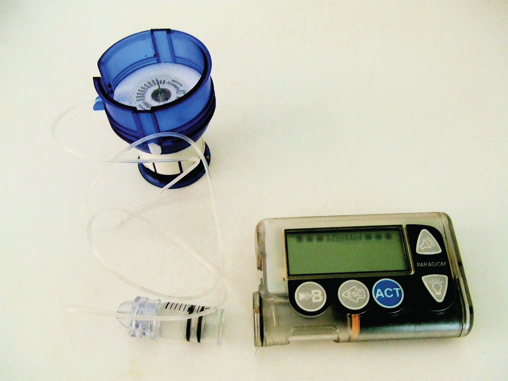ProteinsA compound of high molar mass consisting largely or entirely of amino acids linked together. may be defined as compounds of high molar mass consisting largely or entirely of chains of amino acids. Their masses range from several thousand to several million daltons (Da). In addition to carbon, hydrogen, and oxygen atoms, all proteins contain nitrogen and sulfur atoms, and many also contain phosphorus atoms and traces of other elements. Proteins serve a variety of roles in living organisms and are often classified by these biological roles, which are summarized in Table 18.1 "Classification of Proteins by Biological Function". Muscle tissue is largely protein, as are skin and hair. Proteins are present in the blood, in the brain, and even in tooth enamel. Each type of cell in our bodies makes its own specialized proteins, as well as proteins common to all or most cells.
The dalton is a unit of mass used by biochemists and biologists. It is equivalent to the atomic mass unit. A 30,000 Da protein has a molar mass of 30,000 u.
Table 18.1 Classification of Proteins by Biological Function
| Classification | Biological Function | Example |
|---|---|---|
| enzymes | accelerate biological reactions | α-Amylase catalyzes the hydrolysis of starch and glycogen. |
| structural | provide strength and structure | Keratin is the primary protein of hair and wool. |
| contractile | muscle contraction; cell division | Myosin is one protein needed for the contraction of muscles. |
| transport | transport substances from one place to another | Hemoglobin transports oxygen from the lungs throughout the body. |
| regulatory | regulate the functioning of other proteins | Insulin regulates the activity of specific enzymes in the body. |
| storage | provide storage of essential nutrients | Ovalbumin stores amino acids in the egg white that will be used by the developing bird. |
| protection | protect cells or the organism from foreign substances | Immunoglobulins recognize and breakdown foreign molecules. |
We begin our study of proteins by looking at the properties and reactions of amino acids, which is followed by a discussion of how amino acids link covalently to form peptides and proteins. We end the chapter with a discussion of enzymes—the proteins that act as catalysts in the body.
The proteins in all living species, from bacteria to humans, are constructed from the same set of 20 amino acidsA molecule that contains an amino group and a carboxyl group., so called because each contains an amino group attached to a carboxylic acid. (For more information about amino groups, see Chapter 15 "Organic Acids and Bases and Some of Their Derivatives", Section 15.1 "Functional Groups of the Carboxylic Acids and Their Derivatives".) The amino acids in proteins are α-amino acids, which means the amino group is attached to the α-carbon of the carboxylic acid. (For more information about the α-carbon, see Chapter 15 "Organic Acids and Bases and Some of Their Derivatives", Section 15.2 "Carboxylic Acids: Structures and Names".) Humans can synthesize only about half of the needed amino acids; the remainder must be obtained from the diet and are known as essential amino acidsAn amino acid that must be obtained from the diet because it cannot be synthesized in sufficient quantities by the body..
Two more amino acids have been found in limited quantities in proteins. Selenocysteine was discovered in 1986, while pyrrolysine was discovered in 2002.
The amino acids are colorless, nonvolatile, crystalline solids, melting and decomposing at temperatures above 200°C. These melting temperatures are more like those of inorganic salts than those of amines or organic acids and indicate that the structures of the amino acids in the solid state and in neutral solution are best represented as having both a negatively charged group and a positively charged group. Such a species is known as a zwitterionAn electrically neutral compound that contains both negatively and positively charged groups..

In addition to the amino and carboxyl groups, amino acids have a side chain or R group attached to the α-carbon. Each amino acid has unique characteristics arising from the size, shape, solubility, and ionization properties of its R group. As a result, the side chains of amino acids exert a profound effect on the structure and biological activity of proteins. Although amino acids can be classified in various ways, one common approach is to classify them according to whether the functional group on the side chain at neutral pH is nonpolar, polar but uncharged, negatively charged, or positively charged. The structures and names of the 20 amino acids, their one- and three-letter abbreviations, and some of their distinctive features are given in Table 18.2 "Common Amino Acids Found in Proteins".
Table 18.2 Common Amino Acids Found in Proteins
| Common Name | Abbreviation | Structural Formula (at pH 6) | Molar Mass | Distinctive Feature |
|---|---|---|---|---|
| Amino acids with a nonpolar R group | ||||
| glycine | gly (G) |

|
75 | the only amino acid lacking a chiral carbon |
| alanine | ala (A) |

|
89 | — |
| valine | val (V) |

|
117 | a branched-chain amino acid |
| leucine | leu (L) |

|
131 | a branched-chain amino acid |
| isoleucine | ile (I) |

|
131 | an essential amino acid because most animals cannot synthesize branched-chain amino acids |
| phenylalanine | phe (F) |

|
165 | also classified as an aromatic amino acid |
| tryptophan | trp (W) |

|
204 | also classified as an aromatic amino acid |
| methionine | met (M) |

|
149 | side chain functions as a methyl group donor |
| proline | pro (P) |

|
115 | contains a secondary amine group; referred to as an α-imino acid |
| Amino acids with a polar but neutral R group | ||||
| serine | ser (S) |

|
105 | found at the active site of many enzymes |
| threonine | thr (T) |

|
119 | named for its similarity to the sugar threose |
| cysteine | cys (C) |

|
121 | oxidation of two cysteine molecules yields cystine |
| tyrosine | tyr (Y) |

|
181 | also classified as an aromatic amino acid |
| asparagine | asn (N) |

|
132 | the amide of aspartic acid |
| glutamine | gln (Q) |

|
146 | the amide of glutamic acid |
| Amino acids with a negatively charged R group | ||||
| aspartic acid | asp (D) |

|
132 | carboxyl groups are ionized at physiological pH; also known as aspartate |
| glutamic acid | glu (E) |

|
146 | carboxyl groups are ionized at physiological pH; also known as glutamate |
| Amino acids with a positively charged R group | ||||
| histidine | his (H) |

|
155 | the only amino acid whose R group has a pKa (6.0) near physiological pH |
| lysine | lys (K) |

|
147 | — |
| arginine | arg (R) |

|
175 | almost as strong a base as sodium hydroxide |
The first amino acid to be isolated was asparagine in 1806. It was obtained from protein found in asparagus juice (hence the name). Glycine, the major amino acid found in gelatin, was named for its sweet taste (Greek glykys, meaning “sweet”). In some cases an amino acid found in a protein is actually a derivative of one of the common 20 amino acids (one such derivative is hydroxyproline). The modification occurs after the amino acid has been assembled into a protein.

Notice in Table 18.2 "Common Amino Acids Found in Proteins" that glycine is the only amino acid whose α-carbon is not chiral. Therefore, with the exception of glycine, the amino acids could theoretically exist in either the D- or the L-enantiomeric form and rotate plane-polarized light. As with sugars, chemists use glyceraldehyde as the reference compound for the assignment of configuration to amino acids. (For more information about stereoisomers and configuration, see Chapter 16 "Carbohydrates", Section 16.2 "Classes of Monosaccharides".) Its structure closely resembles an amino acid structure except that in the latter, an amino group takes the place of the OH group on the chiral carbon of the sugar.

We learned in Chapter 16 "Carbohydrates" that all naturally occurring sugars belong to the D series. It is interesting, therefore, that nearly all known plant and animal proteins are composed entirely of L-amino acids. However, certain bacteria contain D-amino acids in their cell walls, and several antibiotics (e.g., actinomycin D and the gramicidins) contain varying amounts of D-leucine, D-phenylalanine, and D-valine.
What is the general structure of an α-amino acid?
Identify the amino acid that fits each description.

Write the side chain of each amino acid.
Write the side chain of each amino acid.
Draw the structure for each amino acid.
Draw the structure for each amino acid.
Identify an amino acid whose side chain contains a(n)
Identify an amino acid whose side chain contains a(n)


The structure of an amino acid allows it to act as both an acid and a base. An amino acid has this ability because at a certain pH value (different for each amino acid) nearly all the amino acid molecules exist as zwitterions. If acid is added to a solution containing the zwitterion, the carboxylate group captures a hydrogen (H+) ion, and the amino acid becomes positively charged. If base is added, ion removal of the H+ ion from the amino group of the zwitterion produces a negatively charged amino acid. In both circumstances, the amino acid acts to maintain the pH of the system—that is, to remove the added acid (H+) or base (OH−) from solution.
Solution
The base removes H+ from the protonated amine group.
The acid adds H+ to the carboxylate group.
Draw the structure for the cation formed when valine (at neutral pH) reacts with an acid.
Draw the structure for the anion formed when valine (at neutral pH) reacts with a base.
The particular pH at which a given amino acid exists in solution as a zwitterion is called the isoelectric pointThe pH at which a given amino acid exists in solution as a zwitterion. (pI). At its pI, the positive and negative charges on the amino acid balance, and the molecule as a whole is electrically neutral. The amino acids whose side chains are always neutral have isoelectric points ranging from 5.0 to 6.5. The basic amino acids (which have positively charged side chains at neutral pH) have relatively high pIs. Acidic amino acids (which have negatively charged side chains at neutral pH) have quite low pIs (Table 18.3 "pIs of Some Representative Amino Acids").
Table 18.3 pIs of Some Representative Amino Acids
| Amino Acid | Classification | pI |
|---|---|---|
| alanine | nonpolar | 6.0 |
| valine | nonpolar | 6.0 |
| serine | polar, uncharged | 5.7 |
| threonine | polar, uncharged | 6.5 |
| arginine | positively charged (basic) | 10.8 |
| histidine | positively charged (basic) | 7.6 |
| lysine | positively charged (basic) | 9.8 |
| aspartic acid | negatively charged (acidic) | 3.0 |
| glutamic acid | negatively charged (acidic) | 3.2 |
Amino acids undergo reactions characteristic of carboxylic acids and amines. The reactivity of these functional groups is particularly important in linking amino acids together to form peptides and proteins, as you will see later in this chapter. Simple chemical tests that are used to detect amino acids take advantage of the reactivity of these functional groups. An example is the ninhydrin test in which the amine functional group of α-amino acids reacts with ninhydrin to form purple-colored compounds. Ninhydrin is used to detect fingerprints because it reacts with amino acids from the proteins in skin cells transferred to the surface by the individual leaving the fingerprint.
Define each term.
Draw the structure for the anion formed when alanine (at neutral pH) reacts with a base.
Draw the structure for the cation formed when alanine (at neutral pH) reacts with an acid.
Draw the structure of leucine and determine the charge on the molecule in a(n)
Draw the structure of isoleucine and determine the charge on the molecule in a(n)
Two or more amino acids can join together into chains called peptides. In Chapter 15 "Organic Acids and Bases and Some of Their Derivatives", Section 15.16 "Formation of Amides", we discussed the reaction between ammonia and a carboxylic acid to form an amide. In a similar reaction, the amino group on one amino acid molecule reacts with the carboxyl group on another, releasing a molecule of water and forming an amide linkage:
An amide bond joining two amino acid units is called a peptide bondThe amide bond joining two amino acid units in a peptide or protein.. Note that the product molecule still has a reactive amino group on the left and a reactive carboxyl group on the right. These can react with additional amino acids to lengthen the peptide. The process can continue until thousands of units have joined, resulting in large proteins.
A chain consisting of only two amino acid units is called a dipeptide; a chain consisting of three is a tripeptide. By convention, peptide and protein structures are depicted with the amino acid whose amino group is free (the N-terminal end) on the left and the amino acid with a free carboxyl group (the C-terminal end) to the right.
The general term peptide refers to an amino acid chain of unspecified length. However, chains of about 50 amino acids or more are usually called proteins or polypeptidesA chain of about 50 or more amino acids.. In its physiologically active form, a protein may be composed of one or more polypeptide chains.
For peptides and proteins to be physiologically active, it is not enough that they incorporate certain amounts of specific amino acids. The order, or sequence, in which the amino acids are connected is also of critical importance. Bradykinin is a nine-amino acid peptide produced in the blood that has the following amino acid sequence:
arg-pro-pro-gly-phe-ser-pro-phe-argThis peptide lowers blood pressure, stimulates smooth muscle tissue, increases capillary permeability, and causes pain. When the order of amino acids in bradykinin is reversed,
arg-phe-pro-ser-phe-gly-pro-pro-argthe peptide resulting from this synthesis shows none of the activity of bradykinin.
Just as millions of different words are spelled with our 26-letter English alphabet, millions of different proteins are made with the 20 common amino acids. However, just as the English alphabet can be used to write gibberish, amino acids can be put together in the wrong sequence to produce nonfunctional proteins. Although the correct sequence is ordinarily of utmost importance, it is not always absolutely required. Just as you can sometimes make sense of incorrectly spelled English words, a protein with a small percentage of “incorrect” amino acids may continue to function. However, it rarely functions as well as a protein having the correct sequence. There are also instances in which seemingly minor errors of sequence have disastrous effects. For example, in some people, every molecule of hemoglobin (a protein in the blood that transports oxygen) has a single incorrect amino acid unit out of about 300 (a single valine replaces a glutamic acid). That “minor” error is responsible for sickle cell anemia, an inherited condition that usually is fatal.
Distinguish between the N-terminal amino acid and the C-terminal amino acid of a peptide or protein.
Describe the difference between an amino acid and a peptide.
Amino acid units in a protein are connected by peptide bonds. What is another name for the functional group linking the amino acids?
The N-terminal end is the end of a peptide or protein whose amino group is free (not involved in the formation of a peptide bond), while the C-terminal end has a free carboxyl group.
A peptide is composed of two or more amino acids. Amino acids are the building blocks of peptides.
amide bond
Draw the structure for each peptide.
Draw the structure for cys-val-ala.
Identify the C- and N-terminal amino acids for the peptide lys-val-phe-gly-arg-cys.
Identify the C- and N-terminal amino acids for the peptide asp-arg-val-tyr-ile-his-pro-phe.
C-terminal amino acid: cys; N-terminal amino acid: lys
Each of the thousands of naturally occurring proteins has its own characteristic amino acid composition and sequence that result in a unique three-dimensional shape. Since the 1950s, scientists have determined the amino acid sequences and three-dimensional conformation of numerous proteins and thus obtained important clues on how each protein performs its specific function in the body.
Proteins are compounds of high molar mass consisting largely or entirely of chains of amino acids. Because of their great complexity, protein molecules cannot be classified on the basis of specific structural similarities, as carbohydrates and lipids are categorized. The two major structural classifications of proteins are based on far more general qualities: whether the protein is (1) fiberlike and insoluble or (2) globular and soluble. Some proteins, such as those that compose hair, skin, muscles, and connective tissue, are fiberlike. These fibrous proteinsA protein that is elongated or fiberlike and insoluble in water. are insoluble in water and usually serve structural, connective, and protective functions. Examples of fibrous proteins are keratins, collagens, myosins, and elastins. Hair and the outer layer of skin are composed of keratin. Connective tissues contain collagen. Myosins are muscle proteins and are capable of contraction and extension. Elastins are found in ligaments and the elastic tissue of artery walls.
Globular proteinsA protein that is generally spherical in structure and soluble in water., the other major class, are soluble in aqueous media. In these proteins, the chains are folded so that the molecule as a whole is roughly spherical. Familiar examples include egg albumin from egg whites and serum albumin in blood. Serum albumin plays a major role in transporting fatty acids and maintaining a proper balance of osmotic pressures in the body. Hemoglobin and myoglobin, which are important for binding oxygen, are also globular proteins.
The structure of proteins is generally described as having four organizational levels. The first of these is the primary structureThe sequence of amino acids in a polypeptide chain or protein., which is the number and sequence of amino acids in a protein’s polypeptide chain or chains, beginning with the free amino group and maintained by the peptide bonds connecting each amino acid to the next. The primary structure of insulin, composed of 51 amino acids, is shown in Figure 18.2 "Primary Structure of Human Insulin".
Figure 18.2 Primary Structure of Human Insulin
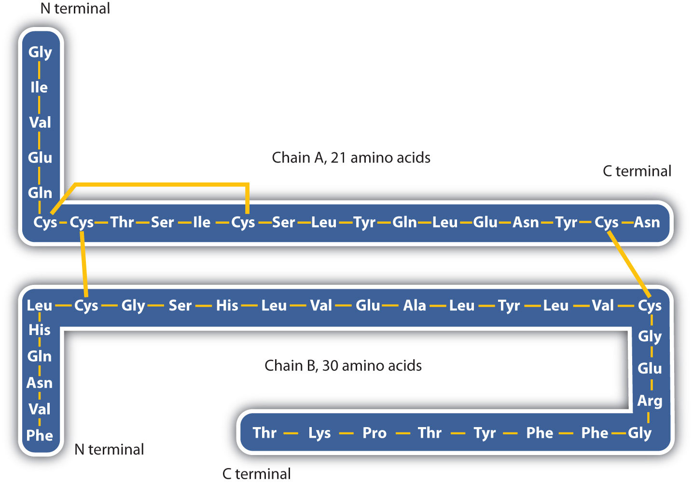Human insulin, whose amino acid sequence is shown here, is a hormone that is required for the proper metabolism of glucose.
A protein molecule is not a random tangle of polypeptide chains. Instead, the chains are arranged in unique but specific conformations. The term secondary structureThe fixed arrangement of the polypeptide backbone. refers to the fixed arrangement of the polypeptide backbone. On the basis of X ray studies, Linus Pauling and Robert Corey postulated that certain proteins or portions of proteins twist into a spiral or a helix. This helix is stabilized by intrachain hydrogen bonding between the carbonyl oxygen atom of one amino acid and the amide hydrogen atom four amino acids up the chain (located on the next turn of the helix) and is known as a right-handed α-helix. X ray data indicate that this helix makes one turn for every 3.6 amino acids, and the side chains of these amino acids project outward from the coiled backbone (Figure 18.3 "A Ball-and-Stick Model of an α-Helix"). The α-keratins, found in hair and wool, are exclusively α-helical in conformation. Some proteins, such as gamma globulin, chymotrypsin, and cytochrome c, have little or no helical structure. Others, such as hemoglobin and myoglobin, are helical in certain regions but not in others.
Figure 18.3 A Ball-and-Stick Model of an α-Helix
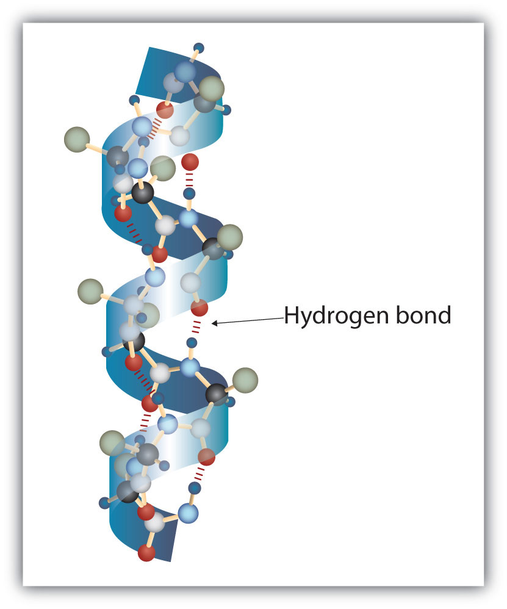This ball-and-stick model shows the intrachain hydrogen bonding between carbonyl oxygen atoms and amide hydrogen atoms. Each turn of the helix spans 3.6 amino acids. Note that the side chains (represented as green spheres) point out from the helix.
Another common type of secondary structure, called the β-pleated sheet conformation, is a sheetlike arrangement in which two or more extended polypeptide chains (or separate regions on the same chain) are aligned side by side. The aligned segments can run either parallel or antiparallel—that is, the N-terminals can face in the same direction on adjacent chains or in different directions—and are connected by interchain hydrogen bonding (Figure 18.4 "A Ball-and-Stick Model of the β-Pleated Sheet Structure in Proteins"). The β-pleated sheet is particularly important in structural proteins, such as silk fibroin. It is also seen in portions of many enzymes, such as carboxypeptidase A and lysozyme.
Figure 18.4 A Ball-and-Stick Model of the β-Pleated Sheet Structure in Proteins
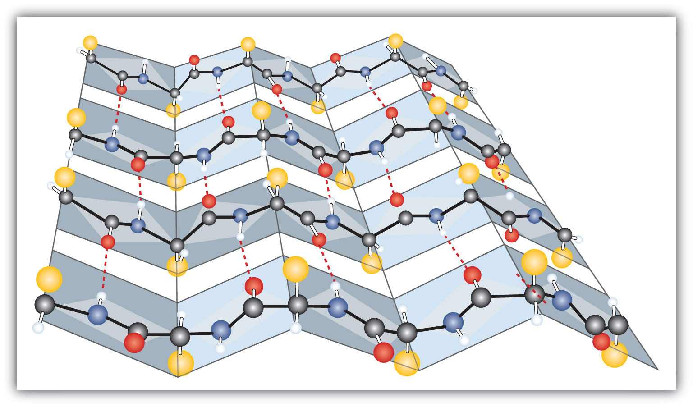The side chains extend above or below the sheet and alternate along the chain. The protein chains are held together by interchain hydrogen bonding.
Tertiary structureThe unique three-dimensional shape of a polypeptide chain as a whole. refers to the unique three-dimensional shape of the protein as a whole, which results from the folding and bending of the protein backbone. The tertiary structure is intimately tied to the proper biochemical functioning of the protein. Figure 18.5 "A Ribbon Model of the Three-Dimensional Structure of Insulin" shows a depiction of the three-dimensional structure of insulin.
Figure 18.5 A Ribbon Model of the Three-Dimensional Structure of Insulin
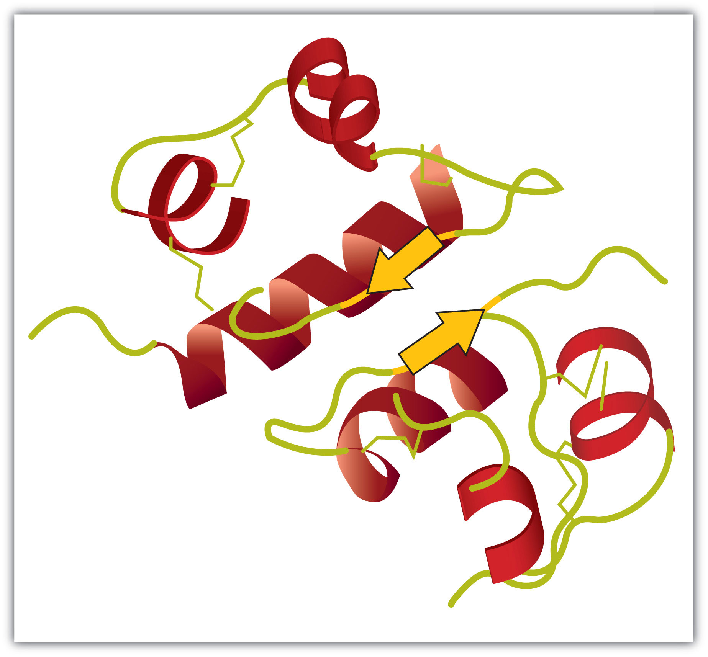The spiral regions represent sections of the polypeptide chain that have an α-helical structure, while the broad arrows represent β-pleated sheet structures.
Four major types of attractive interactions determine the shape and stability of the tertiary structure of proteins. You studied several of these in Chapter 8 "Solids, Liquids, and Gases", Section 8.1 "Intermolecular Interactions".
1. Ionic bondingBonding that results from electrostatic attractions between positively and negatively charged groups.. Ionic bonds result from electrostatic attractions between positively and negatively charged side chains of amino acids. For example, the mutual attraction between an aspartic acid carboxylate ion and a lysine ammonium ion helps to maintain a particular folded area of a protein (part (a) of Figure 18.6 "Tertiary Protein Structure Interactions").
2. Hydrogen bondingBonding between a highly electronegative oxygen atom or nitrogen atom and a hydrogen atom attached to another oxygen atom or nitrogen atom.. Hydrogen bonding forms between a highly electronegative oxygen atom or a nitrogen atom and a hydrogen atom attached to another oxygen atom or a nitrogen atom, such as those found in polar amino acid side chains. Hydrogen bonding (as well as ionic attractions) is extremely important in both the intra- and intermolecular interactions of proteins (part (b) of Figure 18.6 "Tertiary Protein Structure Interactions").
3. Disulfide linkagesA covalent bond that forms by the oxidation and linkage of two sulfur atoms from the side chains of two cysteine residues.. Two cysteine amino acid units may be brought close together as the protein molecule folds. Subsequent oxidation and linkage of the sulfur atoms in the highly reactive sulfhydryl (SH) groups leads to the formation of cystine (part (c) of Figure 18.6 "Tertiary Protein Structure Interactions"). Intrachain disulfide linkages are found in many proteins, including insulin (yellow bars in Figure 18.2 "Primary Structure of Human Insulin") and have a strong stabilizing effect on the tertiary structure.
4. Dispersion forcesA force caused by the instantaneous imbalance of electrons about a molecule.. Dispersion forces arise when a normally nonpolar atom becomes momentarily polar due to an uneven distribution of electrons, leading to an instantaneous dipole that induces a shift of electrons in a neighboring nonpolar atom. Dispersion forces are weak but can be important when other types of interactions are either missing or minimal (part (d) of Figure 18.6 "Tertiary Protein Structure Interactions"). This is the case with fibroin, the major protein in silk, in which a high proportion of amino acids in the protein have nonpolar side chains. The term hydrophobic interaction is often misused as a synonym for dispersion forces. Hydrophobic interactions arise because water molecules engage in hydrogen bonding with other water molecules (or groups in proteins capable of hydrogen bonding). Because nonpolar groups cannot engage in hydrogen bonding, the protein folds in such a way that these groups are buried in the interior part of the protein structure, minimizing their contact with water.
Figure 18.6 Tertiary Protein Structure Interactions
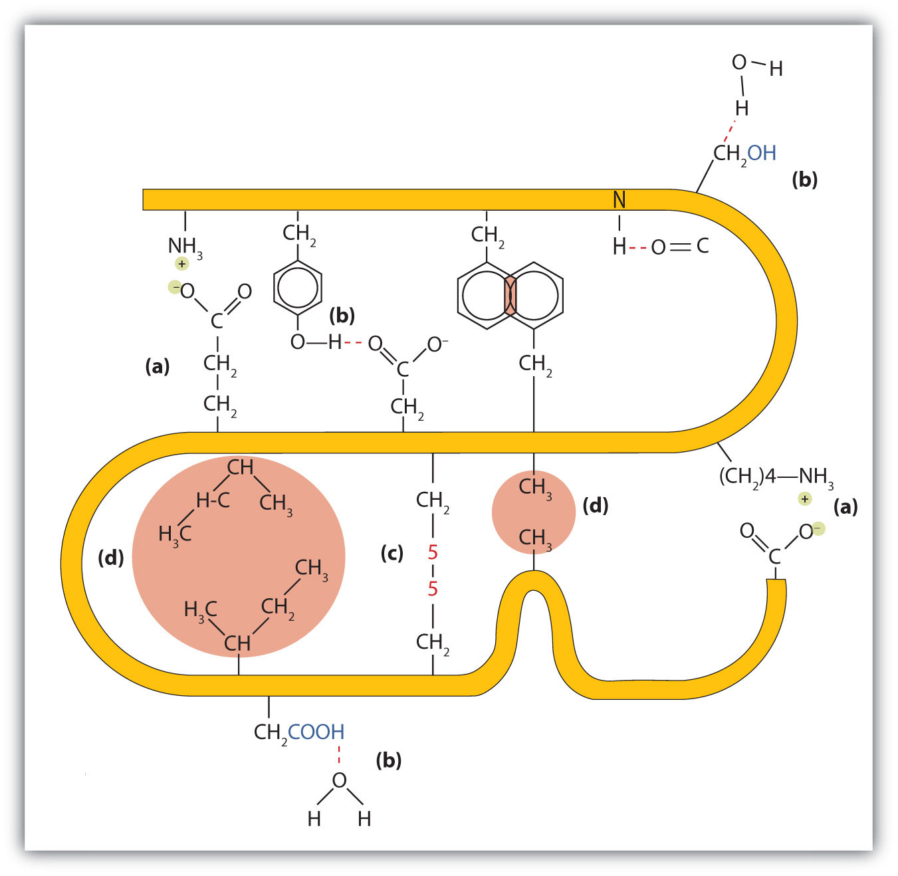Four interactions stabilize the tertiary structure of a protein: (a) ionic bonding, (b) hydrogen bonding, (c) disulfide linkages, and (d) dispersion forces.
When a protein contains more than one polypeptide chain, each chain is called a subunit. The arrangement of multiple subunits represents a fourth level of structure, the quaternary structureThe arrangement of multiple subunits in a protein. of a protein. Hemoglobin, with four polypeptide chains or subunits, is the most frequently cited example of a protein having quaternary structure (Figure 18.7 "The Quaternary Structure of Hemoglobin"). The quaternary structure of a protein is produced and stabilized by the same kinds of interactions that produce and maintain the tertiary structure. A schematic representation of the four levels of protein structure is in Figure 18.8 "Levels of Structure in Proteins".
Figure 18.7 The Quaternary Structure of Hemoglobin
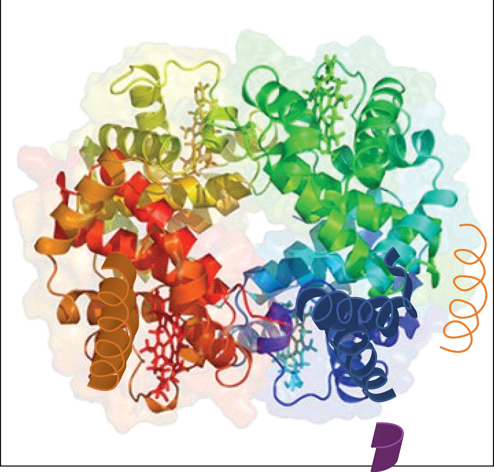Hemoglobin is a protein that transports oxygen throughout the body.
Source: Image from the RCSB PDB (www.pdb.org) of PDB ID 1I3D (R.D. Kidd, H.M. Baker, A.J. Mathews, T. Brittain, E.N. Baker (2001) Oligomerization and ligand binding in a homotetrameric hemoglobin: two high-resolution crystal structures of hemoglobin Bart's (gamma(4)), a marker for alpha-thalassemia. Protein Sci. 1739–1749).
Figure 18.8 Levels of Structure in Proteins
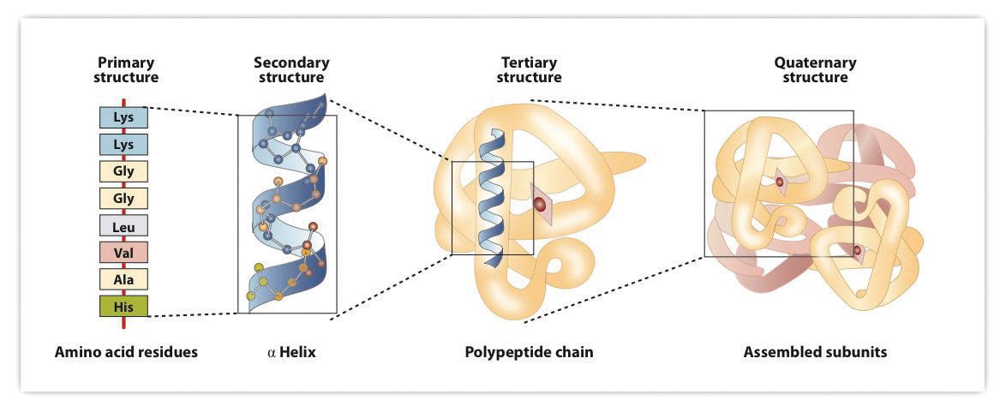The primary structure consists of the specific amino acid sequence. The resulting peptide chain can twist into an α-helix, which is one type of secondary structure. This helical segment is incorporated into the tertiary structure of the folded polypeptide chain. The single polypeptide chain is a subunit that constitutes the quaternary structure of a protein, such as hemoglobin that has four polypeptide chains.
The highly organized structures of proteins are truly masterworks of chemical architecture. But highly organized structures tend to have a certain delicacy, and this is true of proteins. DenaturationAny change in the three-dimensional structure of a macromolecule that renders it incapable of performing its assigned function. is the term used for any change in the three-dimensional structure of a protein that renders it incapable of performing its assigned function. A denatured protein cannot do its job. (Sometimes denaturation is equated with the precipitation or coagulation of a protein; our definition is a bit broader.) A wide variety of reagents and conditions, such as heat, organic compounds, pH changes, and heavy metal ions can cause protein denaturation (Table 18.4 "Protein Denaturation Methods").
Table 18.4 Protein Denaturation Methods
| Method | Effect on Protein Structure |
|---|---|
| Heat above 50°C or ultraviolet (UV) radiation | Heat or UV radiation supplies kinetic energy to protein molecules, causing their atoms to vibrate more rapidly and disrupting relatively weak hydrogen bonding and dispersion forces. |
| Use of organic compounds, such as ethyl alcohol | These compounds are capable of engaging in intermolecular hydrogen bonding with protein molecules, disrupting intramolecular hydrogen bonding within the protein. |
| Salts of heavy metal ions, such as mercury, silver, and lead | These ions form strong bonds with the carboxylate anions of the acidic amino acids or SH groups of cysteine, disrupting ionic bonds and disulfide linkages. |
| Alkaloid reagents, such as tannic acid (used in tanning leather) | These reagents combine with positively charged amino groups in proteins to disrupt ionic bonds. |
Anyone who has fried an egg has observed denaturation. The clear egg white turns opaque as the albumin denatures and coagulates. No one has yet reversed that process. However, given the proper circumstances and enough time, a protein that has unfolded under sufficiently gentle conditions can refold and may again exhibit biological activity (Figure 18.9 "Denaturation and Renaturation of a Protein"). Such evidence suggests that, at least for these proteins, the primary structure determines the secondary and tertiary structure. A given sequence of amino acids seems to adopt its particular three-dimensional arrangement naturally if conditions are right.
Figure 18.9 Denaturation and Renaturation of a Protein
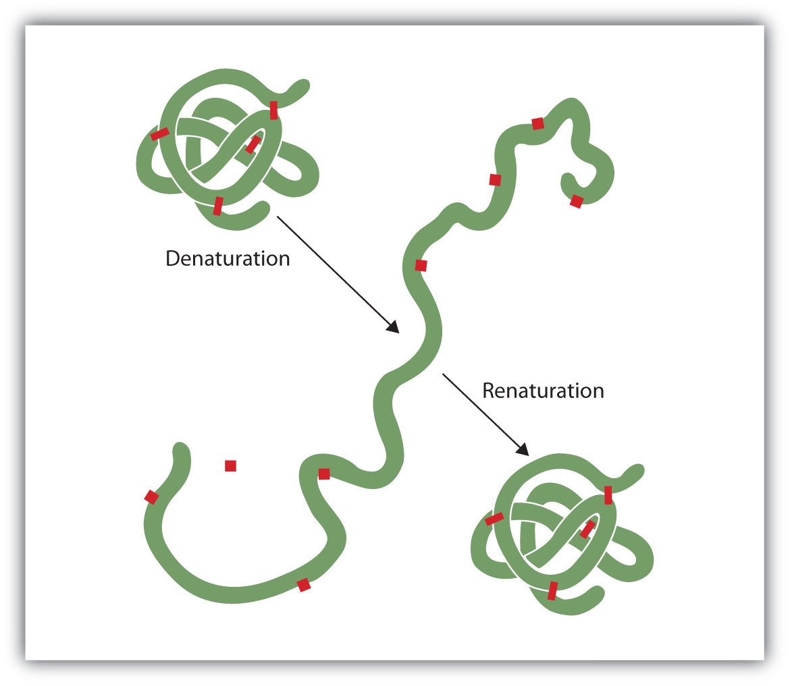The denaturation (unfolding) and renaturation (refolding) of a protein is depicted. The red boxes represent stabilizing interactions, such as disulfide linkages, hydrogen bonding, and/or ionic bonds.
The primary structures of proteins are quite sturdy. In general, fairly vigorous conditions are needed to hydrolyze peptide bonds. At the secondary through quaternary levels, however, proteins are quite vulnerable to attack, though they vary in their vulnerability to denaturation. The delicately folded globular proteins are much easier to denature than are the tough, fibrous proteins of hair and skin.
What is the predominant attractive force that stabilizes the formation of secondary structure in proteins?
Distinguish between the tertiary and quaternary levels of protein structure.
Briefly describe four ways in which a protein could be denatured.
hydrogen bonding
Tertiary structure refers to the unique three-dimensional shape of a single polypeptide chain, while quaternary structure describes the interaction between multiple polypeptide chains for proteins that have more than one polypeptide chain.
(1) heat a protein above 50°C or expose it to UV radiation; (2) add organic solvents, such as ethyl alcohol, to a protein solution; (3) add salts of heavy metal ions, such as mercury, silver, or lead; and (4) add alkaloid reagents such as tannic acid
Classify each protein as fibrous or globular.
Classify each protein as fibrous or globular.
What name is given to the predominant secondary structure found in silk?
What name is given to the predominant secondary structure found in wool protein?
A protein has a tertiary structure formed by interactions between the side chains of the following pairs of amino acids. For each pair, identify the strongest type of interaction between these amino acids.
A protein has a tertiary structure formed by interactions between the side chains of the following pairs of amino acids. For each pair, identify the strongest type of interaction between these amino acids.
What level(s) of protein structure is(are) ordinarily disrupted in denaturation? What level(s) is(are) not?
Which class of proteins is more easily denatured—fibrous or globular?
β-pleated sheet
Protein denaturation disrupts the secondary, tertiary, and quaternary levels of structure. Only primary structure is unaffected by denaturation.
A catalystAny substance that increases the rate or speed of a chemical reaction without being changed or consumed in the reaction. is any substance that increases the rate or speed of a chemical reaction without being changed or consumed in the reaction. EnzymesA biological catalyst. are biological catalysts, and nearly all of them are proteins. The reaction rates attained by enzymes are truly amazing. In their presence, reactions occur at rates that are a million (106) or more times faster than would be attainable in their absence. What is even more amazing is that enzymes perform this function at body temperature (~37°C) and physiological pH (pH ~7), rather than at the conditions that are typically necessary to increase reaction rates (high temperature or pressure, the use of strong oxidizing or reducing agents or strong acids or bases, or a combination of any of these). In addition, enzymes are highly specific in their action; that is, each enzyme catalyzes only one type of reaction in only one compound or a group of structurally related compounds. The compound or compounds on which an enzyme acts are known as its substratesA compound on which an enzyme acts..
Hundreds of enzymes have been purified and studied in an effort to understand how they work so effectively and with such specificity. The resulting knowledge has been used to design drugs that inhibit or activate particular enzymes. An example is the intensive research to improve the treatment of or find a cure for acquired immunodeficiency syndrome (AIDS). AIDS is caused by the human immunodeficiency virus (HIV). Researchers are studying the enzymes produced by this virus and are developing drugs intended to block the action of those enzymes without interfering with enzymes produced by the human body. Several of these drugs have now been approved for use by AIDS patients.
The first enzymes to be discovered were named according to their source or method of discovery. The enzyme pepsin, which aids in the hydrolysis of proteins, is found in the digestive juices of the stomach (Greek pepsis, meaning “digestion”). Papain, another enzyme that hydrolyzes protein (in fact, it is used in meat tenderizers), is isolated from papayas. As more enzymes were discovered, chemists recognized the need for a more systematic and chemically informative identification scheme.
In the current numbering and naming scheme, under the oversight of the Nomenclature Commission of the International Union of Biochemistry, enzymes are arranged into six groups according to the general type of reaction they catalyze (Table 18.5 "Classes of Enzymes"), with subgroups and secondary subgroups that specify the reaction more precisely. Each enzyme is assigned a four-digit number, preceded by the prefix EC—for enzyme classification—that indicates its group, subgroup, and so forth. This is demonstrated in Table 18.6 "Assignment of an Enzyme Classification Number" for alcohol dehydrogenase. Each enzyme is also given a name consisting of the root of the name of its substrate or substrates and the -ase suffix. Thus urease is the enzyme that catalyzes the hydrolysis of urea.
Table 18.5 Classes of Enzymes
| Class | Type of Reaction Catalyzed | Examples |
|---|---|---|
| oxidoreductases | oxidation-reduction reactions | Dehydrogenases catalyze oxidation-reduction reactions involving hydrogen and reductases catalyze reactions in which a substrate is reduced. |
| transferases | transfer reactions of groups, such as methyl, amino, and acetyl | Transaminases catalyze the transfer of amino group, and kinases catalyze the transfer of a phosphate group. |
| hydrolases | hydrolysis reactions | Lipases catalyze the hydrolysis of lipids, and proteases catalyze the hydrolysis of proteins |
| lyases | reactions in which groups are removed without hydrolysis or addition of groups to a double bond | Decarboxylases catalyze the removal of carboxyl groups. |
| isomerases | reactions in which a compound is converted to its isomer | Isomerases may catalyze the conversion of an aldose to a ketose, and mutases catalyze reactions in which a functional group is transferred from one atom in a substrate to another. |
| ligases | reactions in which new bonds are formed between carbon and another atom; energy is required | Synthetases catalyze reactions in which two smaller molecules are linked to form a larger one. |
Table 18.6 Assignment of an Enzyme Classification Number
| Alcohol Dehydrogenase: EC 1.1.1.1 | |
|---|---|
| The first digit indicates that this enzyme is an oxidoreductase; that is, an enzyme that catalyzes an oxidation-reduction reaction. | |
| The second digit indicates that this oxidoreductase catalyzes a reaction involving a primary or secondary alcohol. | |
| The third digit indicates that either the coenzyme NAD+ or NADP+ is required for this reaction. | |
| The fourth digit indicates that this was the first enzyme isolated, characterized, and named using this system of nomenclature. | |
| The systematic name for this enzyme is alcohol:NAD+ oxidoreductase, while the recommended or common name is alcohol dehydrogenase. | |
Reaction catalyzed: |

|
In the small intestine, sucrose is hydrolyzed to form glucose and fructose in a reaction catalyzed by sucrase.
Identify the substrate in this reaction.
Name the enzyme.
sucrose
sucrase
Identify the substrate catalyzed by each enzyme.
Identify the substrate catalyzed by each enzyme.
Identify each type of enzyme.
Identify each type of enzyme.
Enzyme-catalyzed reactions occur in at least two steps. In the first step, an enzyme molecule (E) and the substrate molecule or molecules (S) collide and react to form an intermediate compound called the enzyme-substrate (E–S) complex. (This step is reversible because the complex can break apart into the original substrate or substrates and the free enzyme.) Once the E–S complex forms, the enzyme is able to catalyze the formation of product (P), which is then released from the enzyme surface:
S + E → E–S E–S → P + EHydrogen bonding and other electrostatic interactions hold the enzyme and substrate together in the complex. The structural features or functional groups on the enzyme that participate in these interactions are located in a cleft or pocket on the enzyme surface. This pocket, where the enzyme combines with the substrate and transforms the substrate to product is called the active siteThe location on an enzyme where a substrate binds and is transformed to product. of the enzyme (Figure 18.10 "Substrate Binding to the Active Site of an Enzyme"). It possesses a unique conformation (including correctly positioned bonding groups) that is complementary to the structure of the substrate, so that the enzyme and substrate molecules fit together in much the same manner as a key fits into a tumbler lock. In fact, an early model describing the formation of the enzyme-substrate complex was called the lock-and-key modelA model that portrays an enzyme as conformationally rigid and able to bond only to a substrate or substrates that exactly fit the active site. (Figure 18.11 "The Lock-and-Key Model of Enzyme Action"). This model portrayed the enzyme as conformationally rigid and able to bond only to substrates that exactly fit the active site.
Figure 18.10 Substrate Binding to the Active Site of an Enzyme
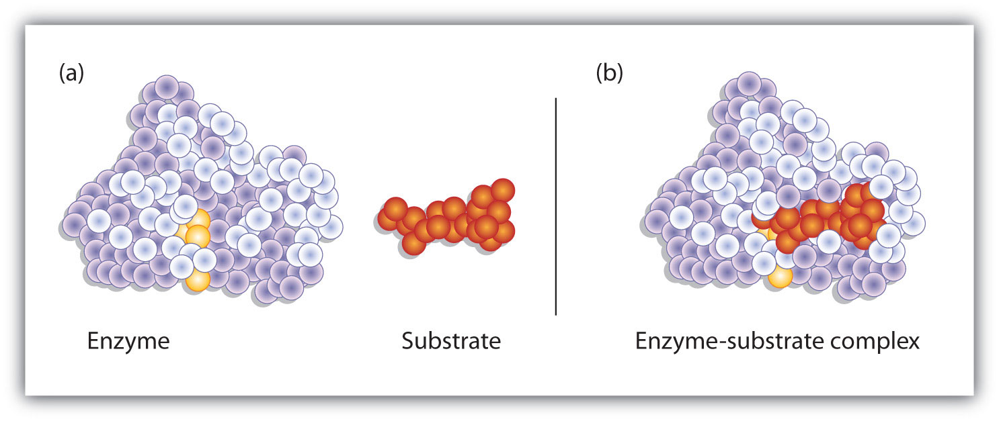The enzyme dihydrofolate reductase is shown with one of its substrates: NADP+ (a) unbound and (b) bound. The NADP+ (shown in red) binds to a pocket that is complementary to it in shape and ionic properties.
Figure 18.11 The Lock-and-Key Model of Enzyme Action

(a) Because the substrate and the active site of the enzyme have complementary structures and bonding groups, they fit together as a key fits a lock. (b) The catalytic reaction occurs while the two are bonded together in the enzyme-substrate complex.
Working out the precise three-dimensional structures of numerous enzymes has enabled chemists to refine the original lock-and-key model of enzyme actions. They discovered that the binding of a substrate often leads to a large conformational change in the enzyme, as well as to changes in the structure of the substrate or substrates. The current theory, known as the induced-fit modelA model that says an enzyme can undergo a conformational change when it binds substrate molecules., says that enzymes can undergo a change in conformation when they bind substrate molecules, and the active site has a shape complementary to that of the substrate only after the substrate is bound, as shown for hexokinase in Figure 18.12 "The Induced-Fit Model of Enzyme Action". After catalysis, the enzyme resumes its original structure.
Figure 18.12 The Induced-Fit Model of Enzyme Action
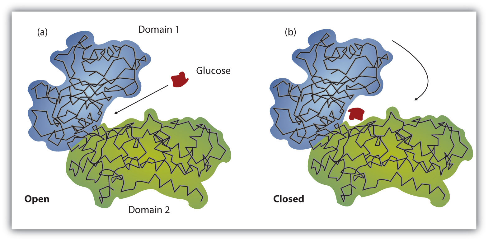(a) The enzyme hexokinase without its substrate (glucose, shown in red) is bound to the active site. (b) The enzyme conformation changes dramatically when the substrate binds to it, resulting in additional interactions between hexokinase and glucose.
The structural changes that occur when an enzyme and a substrate join together bring specific parts of a substrate into alignment with specific parts of the enzyme’s active site. Amino acid side chains in or near the binding site can then act as acid or base catalysts, provide binding sites for the transfer of functional groups from one substrate to another or aid in the rearrangement of a substrate. The participating amino acids, which are usually widely separated in the primary sequence of the protein, are brought close together in the active site as a result of the folding and bending of the polypeptide chain or chains when the protein acquires its tertiary and quaternary structure. Binding to enzymes brings reactants close to each other and aligns them properly, which has the same effect as increasing the concentration of the reacting compounds.
Solution
What type of interaction would occur between an COO− group present on a substrate molecule and a functional group in the active site of an enzyme?
Suggest an amino acid whose side chain might be in the active site of an enzyme and form the type of interaction you just identified.
One characteristic that distinguishes an enzyme from all other types of catalysts is its substrate specificity. An inorganic acid such as sulfuric acid can be used to increase the reaction rates of many different reactions, such as the hydrolysis of disaccharides, polysaccharides, lipids, and proteins, with complete impartiality. In contrast, enzymes are much more specific. Some enzymes act on a single substrate, while other enzymes act on any of a group of related molecules containing a similar functional group or chemical bond. Some enzymes even distinguish between D- and L-stereoisomers, binding one stereoisomer but not the other. Urease, for example, is an enzyme that catalyzes the hydrolysis of a single substrate—urea—but not the closely related compounds methyl urea, thiourea, or biuret. The enzyme carboxypeptidase, on the other hand, is far less specific. It catalyzes the removal of nearly any amino acid from the carboxyl end of any peptide or protein.
Enzyme specificity results from the uniqueness of the active site in each different enzyme because of the identity, charge, and spatial orientation of the functional groups located there. It regulates cell chemistry so that the proper reactions occur in the proper place at the proper time. Clearly, it is crucial to the proper functioning of the living cell.
Distinguish between the lock-and-key model and induced-fit model of enzyme action.
Which enzyme has greater specificity—urease or carboxypeptidase? Explain.
The lock-and-key model portrays an enzyme as conformationally rigid and able to bond only to substrates that exactly fit the active site. The induced fit model portrays the enzyme structure as more flexible and is complementary to the substrate only after the substrate is bound.
Urease has the greater specificity because it can bind only to a single substrate. Carboxypeptidase, on the other hand, can catalyze the removal of nearly any amino acid from the carboxyl end of a peptide or protein.
What type of interaction would occur between each group present on a substrate molecule and a functional group of the active site in an enzyme?
What type of interaction would occur between each group present on a substrate molecule and a functional group of the active site in an enzyme?
For each functional group in Exercise 1, suggest an amino acid whose side chain might be in the active site of an enzyme and form the type of interaction you identified.
For each functional group in Exercise 2, suggest an amino acid whose side chain might be in the active site of an enzyme and form the type of interaction you identified.
The single most important property of enzymes is the ability to increase the rates of reactions occurring in living organisms, a property known as catalytic activity. Because most enzymes are proteins, their activity is affected by factors that disrupt protein structure, as well as by factors that affect catalysts in general. Factors that disrupt protein structure, as we saw in Section 18.4 "Proteins", include temperature and pH; factors that affect catalysts in general include reactant or substrate concentration and catalyst or enzyme concentration. The activity of an enzyme can be measured by monitoring either the rate at which a substrate disappears or the rate at which a product forms.
In the presence of a given amount of enzyme, the rate of an enzymatic reaction increases as the substrate concentration increases until a limiting rate is reached, after which further increase in the substrate concentration produces no significant change in the reaction rate (part (a) of Figure 18.13 "Concentration versus Reaction Rate"). At this point, so much substrate is present that essentially all of the enzyme active sites have substrate bound to them. In other words, the enzyme molecules are saturated with substrate. The excess substrate molecules cannot react until the substrate already bound to the enzymes has reacted and been released (or been released without reacting).
Figure 18.13 Concentration versus Reaction Rate
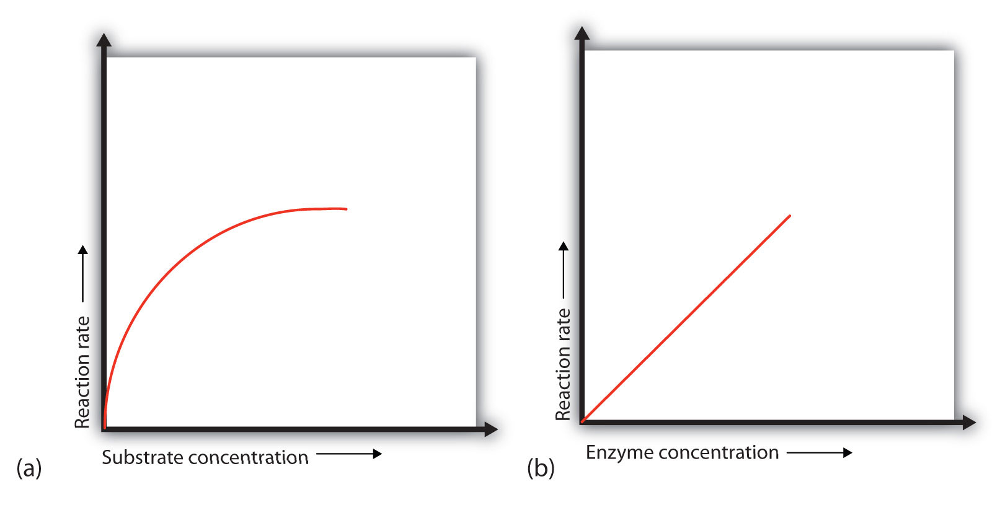(a) This graph shows the effect of substrate concentration on the rate of a reaction that is catalyzed by a fixed amount of enzyme. (b) This graph shows the effect of enzyme concentration on the reaction rate at a constant level of substrate.
Let’s consider an analogy. Ten taxis (enzyme molecules) are waiting at a taxi stand to take people (substrate) on a 10-minute trip to a concert hall, one passenger at a time. If only 5 people are present at the stand, the rate of their arrival at the concert hall is 5 people in 10 minutes. If the number of people at the stand is increased to 10, the rate increases to 10 arrivals in 10 minutes. With 20 people at the stand, the rate would still be 10 arrivals in 10 minutes. The taxis have been “saturated.” If the taxis could carry 2 or 3 passengers each, the same principle would apply. The rate would simply be higher (20 or 30 people in 10 minutes) before it leveled off.
When the concentration of the enzyme is significantly lower than the concentration of the substrate (as when the number of taxis is far lower than the number of waiting passengers), the rate of an enzyme-catalyzed reaction is directly dependent on the enzyme concentration (part (b) of Figure 18.13 "Concentration versus Reaction Rate"). This is true for any catalyst; the reaction rate increases as the concentration of the catalyst is increased.
A general rule of thumb for most chemical reactions is that a temperature rise of 10°C approximately doubles the reaction rate. To some extent, this rule holds for all enzymatic reactions. After a certain point, however, an increase in temperature causes a decrease in the reaction rate, due to denaturation of the protein structure and disruption of the active site (part (a) of Figure 18.14 "Temperature and pH versus Concentration"). For many proteins, denaturation occurs between 45°C and 55°C. Furthermore, even though an enzyme may appear to have a maximum reaction rate between 40°C and 50°C, most biochemical reactions are carried out at lower temperatures because enzymes are not stable at these higher temperatures and will denature after a few minutes.
Figure 18.14 Temperature and pH versus Concentration
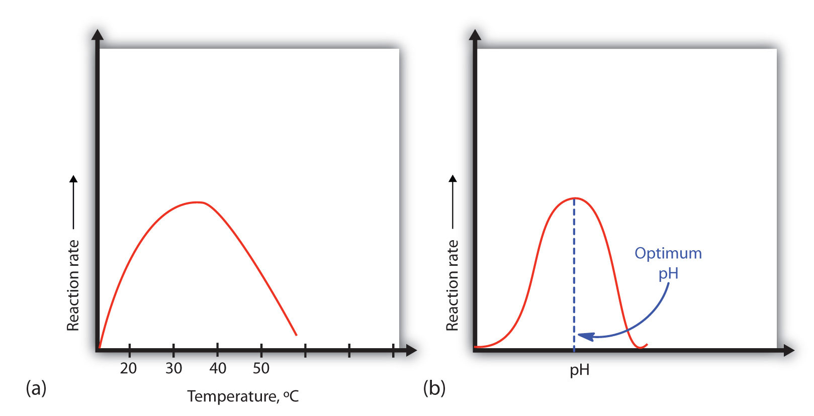(a) This graph depicts the effect of temperature on the rate of a reaction that is catalyzed by a fixed amount of enzyme. (b) This graph depicts the effect of pH on the rate of a reaction that is catalyzed by a fixed amount of enzyme.
At 0°C and 100°C, the rate of enzyme-catalyzed reactions is nearly zero. This fact has several practical applications. We sterilize objects by placing them in boiling water, which denatures the enzymes of any bacteria that may be in or on them. We preserve our food by refrigerating or freezing it, which slows enzyme activity. When animals go into hibernation in winter, their body temperature drops, decreasing the rates of their metabolic processes to levels that can be maintained by the amount of energy stored in the fat reserves in the animals’ tissues.
Because most enzymes are proteins, they are sensitive to changes in the hydrogen ion concentration or pH. Enzymes may be denatured by extreme levels of hydrogen ions (whether high or low); any change in pH, even a small one, alters the degree of ionization of an enzyme’s acidic and basic side groups and the substrate components as well. Ionizable side groups located in the active site must have a certain charge for the enzyme to bind its substrate. Neutralization of even one of these charges alters an enzyme’s catalytic activity.
An enzyme exhibits maximum activity over the narrow pH range in which a molecule exists in its properly charged form. The median value of this pH range is called the optimum pHThe pH at which a particular enzyme exhibits maximum activity. of the enzyme (part (b) of Figure 18.14 "Temperature and pH versus Concentration"). With the notable exception of gastric juice (the fluids secreted in the stomach), most body fluids have pH values between 6 and 8. Not surprisingly, most enzymes exhibit optimal activity in this pH range. However, a few enzymes have optimum pH values outside this range. For example, the optimum pH for pepsin, an enzyme that is active in the stomach, is 2.0.
The concentration of substrate X is low. What happens to the rate of the enzyme-catalyzed reaction if the concentration of X is doubled?
What effect does an increase in the enzyme concentration have on the rate of an enzyme-catalyzed reaction?
If the concentration of the substrate is low, increasing its concentration will increase the rate of the reaction.
An increase in the amount of enzyme will increase the rate of the reaction (provided sufficient substrate is present).
In non-enzyme-catalyzed reactions, the reaction rate increases as the concentration of reactant is increased. In an enzyme-catalyzed reaction, the reaction rate initially increases as the substrate concentration is increased but then begins to level off, so that the increase in reaction rate becomes less and less as the substrate concentration increases. Explain this difference.
Why do enzymes become inactive at very high temperatures?
An enzyme has an optimum pH of 7.4. What is most likely to happen to the activity of the enzyme if the pH drops to 6.3? Explain.
An enzyme has an optimum pH of 7.2. What is most likely to happen to the activity of the enzyme if the pH increases to 8.5? Explain.
In an enzyme-catalyzed reaction, the substrate binds to the enzyme to form an enzyme-substrate complex. If more substrate is present than enzyme, all of the enzyme binding sites will have substrate bound, and further increases in substrate concentration cannot increase the rate.
The activity will decrease; a pH of 6.3 is more acidic than 7.4, and one or more key groups in the active site may bind a hydrogen ion, changing the charge on that group.
In Section 18.7 "Enzyme Activity", we noted that enzymes are inactivated at high temperatures and by changes in pH. These are nonspecific factors that would inactivate any enzyme. The activity of enzymes can also be regulated by more specific inhibitors. Many compounds are poisons because they bind covalently to particular enzymes or kinds of enzymes and inactivate them (Table 18.7 "Poisons as Enzyme Inhibitors").
Table 18.7 Poisons as Enzyme Inhibitors
| Poison | Formula | Example of Enzyme Inhibited | Action |
|---|---|---|---|
| arsenate | AsO43− | glyceraldehyde 3-phosphate dehydrogenase | substitutes for phosphate |
| iodoacetate | ICH2COO− | triose phosphate dehydrogenase | binds to cysteine SH group |
| diisopropylfluoro-phosphate (DIFP; a nerve poison) |

|
acetylcholinesterase | binds to serine OH group |
An irreversible inhibitorA substance that inactivates an enzyme by bonding covalently to a specific group at the active site. inactivates an enzyme by bonding covalently to a particular group at the active site. The inhibitor-enzyme bond is so strong that the inhibition cannot be reversed by the addition of excess substrate. The nerve gases, especially DIFP, irreversibly inhibit biological systems by forming an enzyme-inhibitor complex with a specific OH group of serine situated at the active sites of certain enzymes. The peptidases trypsin and chymotrypsin contain serine groups at the active site and are inhibited by DIFP.

A reversible inhibitorA substance that inactivates an enzyme by binding at the active site through noncovalent, reversible interactions. inactivates an enzyme through noncovalent, more easily reversed, interactions. Unlike an irreversible inhibitor, a reversible inhibitor can dissociate from the enzyme. Reversible inhibitors include competitive inhibitors and noncompetitive inhibitors. (There are additional types of reversible inhibitors.) A competitive inhibitorA compound that resembles a particular substrate and competes with the substrate for binding at the active site of an enzyme to slow the rate of the reaction. is any compound that bears a structural resemblance to a particular substrate and thus competes with that substrate for binding at the active site of an enzyme. The inhibitor is not acted on by the enzyme but does prevent the substrate from approaching the active site.
The degree to which a competitive inhibitor interferes with an enzyme’s activity depends on the relative concentrations of the substrate and the inhibitor. If the inhibitor is present in relatively large quantities, it will initially block most of the active sites. But because the binding is reversible, some substrate molecules will eventually bind to the active site and be converted to product. Increasing the substrate concentration promotes displacement of the inhibitor from the active site. Competitive inhibition can be completely reversed by adding substrate so that it reaches a much higher concentration than that of the inhibitor.
Studies of competitive inhibition have provided helpful information about certain enzyme-substrate complexes and the interactions of specific groups at the active sites. As a result, pharmaceutical companies have synthesized drugs that competitively inhibit metabolic processes in bacteria and certain cancer cells. Many drugs are competitive inhibitors of specific enzymes.
A classic example of competitive inhibition is the effect of malonate on the enzyme activity of succinate dehydrogenase (Figure 18.15 "Competitive Inhibition"). Malonate and succinate are the anions of dicarboxylic acids and contain three and four carbon atoms, respectively. The malonate molecule binds to the active site because the spacing of its carboxyl groups is not greatly different from that of succinate. However, no catalytic reaction occurs because malonate does not have a CH2CH2 group to convert to CH=CH. This reaction will also be discussed in connection with the Krebs cycle and energy production. (For more information about the Krebs cycle, see Chapter 20 "Energy Metabolism", Section 20.4 "Stage III of Catabolism".)
Figure 18.15 Competitive Inhibition

(a) Succinate binds to the enzyme succinate dehydrogenase. A dehydrogenation reaction occurs, and the product—fumarate—is released from the enzyme. (b) Malonate also binds to the active site of succinate dehydrogenase. In this case, however, no subsequent reaction occurs while malonate remains bound to the enzyme.
Chemotherapy is the strategic use of chemicals (that is, drugs) to destroy infectious microorganisms or cancer cells without causing excessive damage to the other, healthy cells of the host. From bacteria to humans, the metabolic pathways of all living organisms are quite similar, so the search for safe and effective chemotherapeutic agents is a formidable task. Many well-established chemotherapeutic drugs function by inhibiting a critical enzyme in the cells of the invading organism.
An antibiotic is a compound that kills bacteria; it may come from a natural source such as molds or be synthesized with a structure analogous to a naturally occurring antibacterial compound. Antibiotics constitute no well-defined class of chemically related substances, but many of them work by effectively inhibiting a variety of enzymes essential to bacterial growth.
Penicillin, one of the most widely used antibiotics in the world, was fortuitously discovered by Alexander Fleming in 1928, when he noticed antibacterial properties in a mold growing on a bacterial culture plate. In 1938, Ernst Chain and Howard Florey began an intensive effort to isolate penicillin from the mold and study its properties. The large quantities of penicillin needed for this research became available through development of a corn-based nutrient medium that the mold loved and through the discovery of a higher-yielding strain of mold at a United States Department of Agriculture research center near Peoria, Illinois. Even so, it was not until 1944 that large quantities of penicillin were being produced and made available for the treatment of bacterial infections.
Penicillin functions by interfering with the synthesis of cell walls of reproducing bacteria. It does so by inhibiting an enzyme—transpeptidase—that catalyzes the last step in bacterial cell-wall biosynthesis. The defective walls cause bacterial cells to burst. Human cells are not affected because they have cell membranes, not cell walls.
Several naturally occurring penicillins have been isolated. They are distinguished by different R groups connected to a common structure: a four-member cyclic amide (called a lactam ring) fused to a five-member ring. The addition of appropriate organic compounds to the culture medium leads to the production of the different kinds of penicillin.
The penicillins are effective against gram-positive bacteria (bacteria capable of being stained by Gram’s stain) and a few gram-negative bacteria (including the intestinal bacterium Escherichia coli). They are effective in the treatment of diphtheria, gonorrhea, pneumonia, syphilis, many pus infections, and certain types of boils. Penicillin G was the earliest penicillin to be used on a wide scale. However, it cannot be administered orally because it is quite unstable; the acidic pH of the stomach converts it to an inactive derivative. The major oral penicillins—penicillin V, ampicillin, and amoxicillin—on the other hand, are acid stable.

Some strains of bacteria become resistant to penicillin through a mutation that allows them to synthesize an enzyme—penicillinase—that breaks the antibiotic down (by cleavage of the amide linkage in the lactam ring). To combat these strains, scientists have synthesized penicillin analogs (such as methicillin) that are not inactivated by penicillinase.
Some people (perhaps 5% of the population) are allergic to penicillin and therefore must be treated with other antibiotics. Their allergic reaction can be so severe that a fatal coma may occur if penicillin is inadvertently administered to them. Fortunately, several other antibiotics have been discovered. Most, including aureomycin and streptomycin, are the products of microbial synthesis. Others, such as the semisynthetic penicillins and tetracyclines, are made by chemical modifications of antibiotics; and some, like chloramphenicol, are manufactured entirely by chemical synthesis. They are as effective as penicillin in destroying infectious microorganisms. Many of these antibiotics exert their effects by blocking protein synthesis in microorganisms.
Initially, antibiotics were considered miracle drugs, substantially reducing the number of deaths from blood poisoning, pneumonia, and other infectious diseases. Some seven decades ago, a person with a major infection almost always died. Today, such deaths are rare. Seven decades ago, pneumonia was a dreaded killer of people of all ages. Today, it kills only the very old or those ill from other causes. Antibiotics have indeed worked miracles in our time, but even miracle drugs have limitations. Not long after the drugs were first used, disease organisms began to develop strains resistant to them. In a race to stay ahead of resistant bacterial strains, scientists continue to seek new antibiotics. The penicillins have now been partially displaced by related compounds, such as the cephalosporins and vancomycin. Unfortunately, some strains of bacteria have already shown resistance to these antibiotics.
Some reversible inhibitors are noncompetitive. A noncompetitive inhibitorA compound that can combine with either the free enzyme or the enzyme-substrate complex at a site distinct from the active site to slow the rate of the reaction. can combine with either the free enzyme or the enzyme-substrate complex because its binding site on the enzyme is distinct from the active site. Binding of this kind of inhibitor alters the three-dimensional conformation of the enzyme, changing the configuration of the active site with one of two results. Either the enzyme-substrate complex does not form at its normal rate, or, once formed, it does not yield products at the normal rate. Because the inhibitor does not structurally resemble the substrate, the addition of excess substrate does not reverse the inhibitory effect.
Feedback inhibitionA normal biochemical process that makes use of noncompetitive inhibitors to control some enzymatic activity. is a normal biochemical process that makes use of noncompetitive inhibitors to control some enzymatic activity. In this process, the final product inhibits the enzyme that catalyzes the first step in a series of reactions. Feedback inhibition is used to regulate the synthesis of many amino acids. For example, bacteria synthesize isoleucine from threonine in a series of five enzyme-catalyzed steps. As the concentration of isoleucine increases, some of it binds as a noncompetitive inhibitor to the first enzyme of the series (threonine deaminase), thus bringing about a decrease in the amount of isoleucine being formed (Figure 18.16 "Feedback Inhibition of Threonine Deaminase by Isoleucine").
Figure 18.16 Feedback Inhibition of Threonine Deaminase by Isoleucine

Threonine deaminase is the first enzyme in the conversion of threonine to isoleucine. Isoleucine inhibits threonine deaminase through feedback inhibition .
What are the characteristics of an irreversible inhibitor?
In what ways does a competitive inhibitor differ from a noncompetitive inhibitor?
It inactivates an enzyme by bonding covalently to a particular group at the active site.
A competitive inhibitor structurally resembles the substrate for a given enzyme and competes with the substrate for binding at the active site of the enzyme. A noncompetitive inhibitor binds at a site distinct from the active site and can bind to either the free enzyme or the enzyme-substrate complex.
What amino acid is present in the active site of all enzymes that are irreversibly inhibited by nerve gases such as DIFP?
Oxaloacetate (OOCCH2COCOO) inhibits succinate dehydrogenase. Would you expect oxaloacetate to be a competitive or noncompetitive inhibitor? Explain.
serine
Many enzymes are simple proteins consisting entirely of one or more amino acid chains. Other enzymes contain a nonprotein component called a cofactorA nonprotein component of an enzyme that is necessary for an enzyme’s proper functioning. that is necessary for the enzyme’s proper functioning. There are two types of cofactors: inorganic ions [e.g., zinc or Cu(I) ions] and organic molecules known as coenzymesA cofactor that is an organic molecule.. Most coenzymes are vitamins or are derived from vitamins.
VitaminsAn organic compound that is essential in very small amounts for the maintenance of normal metabolism. are organic compounds that are essential in very small (trace) amounts for the maintenance of normal metabolism. They generally cannot be synthesized at adequate levels by the body and must be obtained from the diet. The absence or shortage of a vitamin may result in a vitamin-deficiency disease. In the first half of the 20th century, a major focus of biochemistry was the identification, isolation, and characterization of vitamins.
Despite accumulating evidence that people needed more than just carbohydrates, fats, and proteins in their diets for normal growth and health, it was not until the early 1900s that research established the need for trace nutrients in the diet.
Because organisms differ in their synthetic abilities, a substance that is a vitamin for one species may not be so for another. Over the past 100 years, scientists have identified and isolated 13 vitamins required in the human diet and have divided them into two broad categories: the fat-soluble vitamins, which include vitamins A, D, E, and K, and the water-soluble vitamins, which are the B complex vitamins and vitamin C. All fat-soluble vitamins contain a high proportion of hydrocarbon structural components. There are one or two oxygen atoms present, but the compounds as a whole are nonpolar. In contrast, water-soluble vitamins contain large numbers of electronegative oxygen and nitrogen atoms, which can engage in hydrogen bonding with water. Most water-soluble vitamins act as coenzymes or are required for the synthesis of coenzymes. The fat-soluble vitamins are important for a variety of physiological functions. The key vitamins and their functions are found in Table 18.8 "Fat-Soluble Vitamins and Physiological Functions" and Table 18.9 "Water-Soluble Vitamins and Physiological Functions".
Table 18.8 Fat-Soluble Vitamins and Physiological Functions
| Vitamin | Physiological Function | Effect of Deficiency |
|---|---|---|
| vitamin A (retinol) | formation of vision pigments; differentiation of epithelial cells | night blindness; continued deficiency leads to total blindness |
| vitamin D (cholecalciferol) | increases the body’s ability to absorb calcium and phosphorus | osteomalacia (softening of the bones); known as rickets in children |
| vitamin E (tocopherol) | fat-soluble antioxidant | damage to cell membranes |
| vitamin K (phylloquinone) | formation of prothrombin, a key enzyme in the blood-clotting process | increases the time required for blood to clot |
Table 18.9 Water-Soluble Vitamins and Physiological Functions
| Vitamin | Coenzyme | Coenzyme Function | Deficiency Disease |
|---|---|---|---|
| vitamin B1 (thiamine) | thiamine pyrophosphate | decarboxylation reactions | beri-beri |
| vitamin B2 (riboflavin) | flavin mononucleotide or flavin adenine dinucleotide | oxidation-reduction reactions involving two hydrogen atoms | — |
| vitamin B3 (niacin) | nicotinamide adenine dinucleotide or nicotinamide adenine dinucleotide phosphate | oxidation-reduction reactions involving the hydride ion (H−) | pellagra |
| vitamin B6 (pyridoxine) | pyridoxal phosphate | variety of reactions including the transfer of amino groups | — |
| vitamin B12 (cyanocobalamin) | methylcobalamin or deoxyadenoxylcobalamin | intramolecular rearrangement reactions | pernicious anemia |
| biotin | biotin | carboxylation reactions | — |
| folic acid | tetrahydrofolate | carrier of one-carbon units such as the formyl group | anemia |
| pantothenic Acid | coenzyme A | carrier of acyl groups | — |
| vitamin C (ascorbic acid) | none | antioxidant; formation of collagen, a protein found in tendons, ligaments, and bone | scurvy |
Vitamins C and E, as well as the provitamin β-carotene can act as antioxidants in the body. AntioxidantsA substance that prevents oxidation. prevent damage from free radicals, which are molecules that are highly reactive because they have unpaired electrons. Free radicals are formed not only through metabolic reactions involving oxygen but also by such environmental factors as radiation and pollution.
β-carotene is known as a provitamin because it can be converted to vitamin A in the body.
Free radicals react most commonly react with lipoproteins and unsaturated fatty acids in cell membranes, removing an electron from those molecules and thus generating a new free radical. The process becomes a chain reaction that finally leads to the oxidative degradation of the affected compounds. Antioxidants react with free radicals to stop these chain reactions by forming a more stable molecule or, in the case of vitamin E, a free radical that is much less reactive. (Vitamin E is converted back to its original form through interaction with vitamin C.)
What is the difference between a cofactor and a coenzyme?
How are vitamins related to coenzymes?
A coenzyme is one type of cofactor. Coenzymes are organic molecules required by some enzymes for activity. A cofactor can be either a coenzyme or an inorganic ion.
Coenzymes are synthesized from vitamins.
Identify each vitamin as water soluble or fat soluble.
Identify each vitamin as water soluble or fat soluble.
What vitamin is needed to form each coenzyme?
What coenzyme is formed from each vitamin?
What is the function of each vitamin or coenzyme?
What is the function of each vitamin or coenzyme?
To ensure that you understand the material in this chapter, you should review the meanings of the bold terms in the following summary and ask yourself how they relate to the topics in the chapter.
A protein is a large biological polymer synthesized from amino acids, which are carboxylic acids containing an α-amino group. Proteins have a variety of important roles in living organisms, yet they are made from the same 20 L-amino acids. About half of these amino acids, the essential amino acids, cannot be synthesized by the human body and must be obtained from the diet. In the solid state and in neutral solutions, amino acids exist as zwitterions, species that are charged but electrically neutral. In this form, they behave much like inorganic salts. Each amino acid belongs to one of four classes depending on the characteristics of its R group or amino acid side chain: nonpolar, polar but neutral, positively charged, and negatively charged. Depending on the conditions, amino acids can act as either acids or bases, which means that proteins act as buffers. The pH at which an amino acid exists as the zwitterion is called the isoelectric point (pI).
The amino acids in a protein are linked together by peptide bonds. Protein chains containing 10 or fewer amino acids are usually referred to as peptides, with a prefix such as di- or tri- indicating the number of amino acids. Chains containing more than 50 amino acid units are referred to as proteins or polypeptides. Proteins are classified globular or fibrous, depending on their structure and resulting solubility in water. Globular proteins are nearly spherical and are soluble in water; fibrous proteins have elongated or fibrous structures and are not soluble in water.
Protein molecules can have as many as four levels of structure. The primary structure is the sequence of amino acids in the chain. The secondary structure is the arrangement of adjacent atoms in the peptide chain; the most common arrangements are α-helices or β-pleated sheets. The tertiary structure is the overall three-dimensional shape of the molecule that results from the way the chain bends and folds in on itself. Proteins that consist of more than one chain have quaternary structure, which is the way the multiple chains are packed together.
Four types of intramolecular and intermolecular forces contribute to secondary, tertiary, and quaternary structure: (1) hydrogen bonding between an oxygen or a nitrogen atom and a hydrogen atom bound to an oxygen atom or a nitrogen atom, either on the same chain or on a neighboring chain; (2) ionic bonding between one positively charged side chain and one negatively charged side chain; (3) disulfide linkages between cysteine units; and (4) dispersion forces between nonpolar side chains.
Because of their complexity, protein molecules are delicate and easy to disrupt. A denatured protein is one whose conformation has been changed, in a process called denaturation, so that it can no longer do its physiological job. A variety of conditions, such as heat, ultraviolet radiation, the addition of organic compounds, or changes in pH can denature a protein.
An enzyme is an organic catalyst produced by a living cell. Enzymes are such powerful catalysts that the reactions they promote occur rapidly at body temperature. Without the help of enzymes, these reactions would require high temperatures and long reaction times.
The molecule or molecules on which an enzyme acts are called its substrates. An enzyme has an active site where its substrate or substrates bind to form an enzyme-substrate complex. The reaction occurs, and product is released:
E + S → E–S → E + PThe original lock-and-key model of enzyme and substrate binding pictured a rigid enzyme of unchanging configuration binding to the appropriate substrate. The newer induced-fit model describes the enzyme active site as changing its conformation after binding to the substrate.
Most enzymes have maximal activity in a narrow pH range centered on an optimum pH. In this pH range, the enzyme is correctly folded, and catalytic groups in the active site have the correct charge (positive, negative, or neutral). For most enzymes, the optimum pH is between 6 and 8.
Substances that interfere with enzyme function are called inhibitors. An irreversible inhibitor inactivates enzymes by forming covalent bonds to the enzyme, while a reversible inhibitor inactivates an enzyme by a weaker, noncovalent interaction that is easier to disrupt. A competitive inhibitor is a reversible inhibitor that is structurally similar to the substrate and binds to the active site. When the inhibitor is bound, the substrate is blocked from the active site and no reaction occurs. Because the binding of such an inhibitor is reversible, a high substrate concentration will overcome the inhibition because it increases the likelihood of the substrate binding. A noncompetitive inhibitor binds reversibly at a site distinct from the active site. Thus, it can bind to either the enzyme or the enzyme-substrate complex. The inhibitor changes the conformation of the active site so that the enzyme cannot function properly. Noncompetitive inhibitors are important in feedback inhibition, in which the amount of product produced by a series of reactions is carefully controlled. The final product in a series of reactions acts as a noncompetitive inhibitor of the initial enzyme.
Simple enzymes consist entirely of one or more amino acid chains. Complex enzymes are composed of one or more amino acid chains joined to cofactors—inorganic ions or organic coenzymes. Vitamins are organic compounds that are essential in very small amounts for the maintenance of normal metabolism and generally cannot be synthesized at adequate levels by the body. Vitamins are divided into two broad categories: fat-soluble vitamins and water-soluble vitamins. Many of the water-soluble vitamins are used for the synthesis of coenzymes.
Draw the structure of the amino acid γ-aminobutyric acid (GABA). Would you expect to find GABA in the amino acid sequence of a protein? Explain.
Draw the structure of the amino acid homocysteine (R group = CH2CH2SH). Would you expect to find homocysteine in the amino acid sequence of a protein? Justify your answer.
Write equations to show how leucine can act as a buffer (that is, how it can neutralize added acid or base).
Write equations to show how isoleucine can act as a buffer (that is, how it can neutralize added acid or base).
Glutathione (γ-glutamylcysteinylglycine) is a tripeptide found in all cells of higher animals. It contains glutamic acid joined in an unusual peptide linkage involving the carboxyl group of the R group (known as γ-carboxyl group), rather than the usual carboxyl group (the α-carboxyl group). Draw the structure of glutathione.
Draw the structure of the pentapeptide whose sequence is arg-his-gly-leu-asp. Identify which of the amino acids have R groups that can donate or gain hydrogen ions.
Bradykinin is a peptide hormone composed of nine amino acids that lowers blood pressure. Its primary structure is arg-pro-pro-gly-phe-ser-pro-phe-arg. Would you expect bradykinin to be positively charged, negatively charged, or neutral at a pH of 6.0? Justify your answer.
One of the neurotransmitters involved in pain sensation is a peptide called substance P, which is composed of 11 amino acids and is released by nerve-cell terminals in response to pain. Its primary structure is arg-pro-lys-pro-gln-gln-phe-phe-gly-leu-met. Would you expect this peptide to be positively charged, negatively charged, or neutral at a pH of 6.0? Justify your answer.
Carbohydrates are incorporated into glycoproteins. Would you expect the incorporation of sugar units to increase or decrease the solubility of a protein? Justify your answer.
Some proteins have phosphate groups attached through an ester linkage to the OH groups of serine, threonine, or tyrosine residues to form phosphoproteins. Would you expect the incorporation of a phosphate group to increase or decrease the solubility of a protein? Justify your answer.
Refer to Table 18.5 "Classes of Enzymes" and determine how each enzyme would be classified.
Refer to Table 18.5 "Classes of Enzymes" and determine how each enzyme would be classified.
the enzyme that catalyzes the removal of a carboxyl group from pyruvate to form acetate
the enzyme that catalyzes the rearrangement of 3-phosphoglycerate to form 2-phosphoglycerate
The enzyme lysozyme has an aspartic acid residue in the active site. In acidic solution, the enzyme is inactive, but activity increases as the pH rises to around 6. Explain why.
The enzyme lysozyme has a glutamic acid residue in the active site. At neutral pH (6–7), the enzyme is active, but activity decreases as the pH rises. Explain why.
The activity of a purified enzyme is measured at a substrate concentration of 1.0 μM and found to convert 49 μmol of substrate to product in 1 min. The activity is measured at 2.0 μM substrate and found to convert 98 μmol of substrate to product/minute.
A patient has a fever of 39°C. Would you expect the activity of enzymes in the body to increase or decrease relative to their activity at normal body temperature (37°C)?
Using your knowledge of factors that influence enzyme activity, describe what happens when milk is pasteurized.
This amino acid would not be found in proteins because it is not an α-amino acid.
Bradykinin would be positively charged; all of the amino acids, except for arginine, have R groups that do not become either positively or negatively charged. The two arginines are R groups that are positively charged at neutral pH, so the peptide would have an overall positive charge.
Carbohydrates have many OH groups attached, which can engage in hydrogen bonding with water, which increases the solubility of the proteins.
The enzyme is active when the carboxyl group in the R group of aspartic acid does not have the hydrogen attached (forming COO–); the hydrogen is removed when the pH of the solution is around pH 6 or higher.
When milk is pasteurized, it is heated to high temperatures. These high temperatures denature the proteins in bacteria, so they cannot carry out needed functions to grow and multiply.